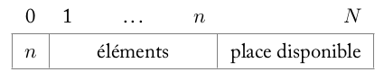
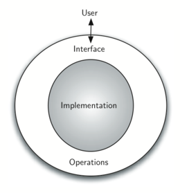

Structures de données linéaires 1: pile et file - implémentation et interface⚓︎
Complément-rappels: les tableaux/listes de python (le retour)
En classe de première on a rencontré et utilisé les tableaux. En toute rigueur, ce sont des structures
ayant une taille fixe et contenant des objets de même type.
Cependant, Python n'implémente pas des tableaux répondant à ces critères (du moins pas sans module
spécialisé). A la place, on trouve des structures plus complexes: les tableaux dynamiques (les fameuses
"listes de python") qui ont la propriété de pouvoir être agrandis, à droite.
On peut ajouter ou retirer des éléments d'une liste de python avec les méthodes append et pop.
1 2 3 4 5 6 7 8 9 10 | |
1 2 3 4 | |
Rappelons enfin, que l'accès à la dernière valeur du tableau peut se faire avec l'index
-1:
1 2 | |
Les structures de données linéaires⚓︎
En informatique, pour chaque type de données, pour chaque utilisation prévue, une structure particulière de données se revèlera probablement plus adaptée qu'une autre.
Lorsque les données ne comportent pas de hiérarchie et jouent le même rôle, on utilise des structures de données linéaires comme les dictionnaires ou les listes. Par ailleurs, le problème de l'entrée ou de la sortie des données dans la structure peut être important. Ce qui nous amènera à distinguer ces structures linéaires entre elles.
Une première structure simple: la pile⚓︎
Présentation⚓︎
Dans une pile d'assiettes, les manipulations enlever ou déposer une nouvelle assiette, ne peuvent se faire qu'au sommet. Une propriété remarquable est qu'une assiette ne peut être enlevée qu'après avoir enlevé toutes celles qui se trouvaient au dessus. Il s'agit d'une structure de type LIFO, qui signifie Last In First Out.
En informatique, il existe une structure de donnée appelée pile (stack en anglais) dont le fonctionnnement peut rappeler celui de la pile d'assiette. Les applications sont très nombreuses. Citons par exemple, le problème de l'annulation de la dernière action enregistrée de nombreux logiciels (le fameux Ctrl＋Z). Il s'agit de sauvegarder les actions de l'utilisateur et de pouvoir restaurer la dernière si besoin. Il existe énormément de ressources de vulgarisation sur Internet permettant de découvrir son fonctionnement
Réalisation (implémentation) simple⚓︎
Une première réalisation possible d'une pile (bornée) peut se faire avec un tableau (de taille fixe \(N+1\)). La première case du tableau (index 0) stockera le nombre \(n\) d'éléments de la pile, permettant ainsi d'avoir accès au sommet.

1 2 3 4 5 6 7 | |
Les opérations d'insertions et de suppressions, qu'on nommera ici empiler et dépiler, se font au sommet.
Il est évident qu'on ne peut pas dépiler une pile vide ou empiler une pile pleine ! Il faut donc gérer ces cas. On peut éventuellement prévoir une fonction est_pilevide.
1 2 3 4 5 6 7 8 9 10 11 12 13 14 15 | |
Enfin, il est courant d'avoir une fonction sommet qui récupère le seul élément accessible de la pile.
1 2 3 | |
Application
Donner la situation de la pile après chacune des opérations suivantes:
1 2 3 4 5 | |
On peut aussi réaliser une pile (non bornée) avec des listes de python et leurs méthodes append et pop.
A faire
Compléter les fonctions depiler , empiler et sommet.
1 2 3 4 5 6 7 8 9 10 11 12 13 14 15 16 17 | |
1 2 3 4 5 6 7 8 | |
1 2 | |
A retenir
Les opérations réalisables sur une pile peuvent donner lieu à des réalisations (on dit aussi implémentations) différentes.
Une deuxième structure: la file⚓︎
Présentation⚓︎
La file est une structure qui diffère de la pile dans le sens où l'insertion et la suppression ne se font pas du même côté (penser à une file d'attente devant un guichet). Ces opérations sont nommées enfiler et défiler. Les files sont par exemple utilisées dans les gestionnaires d'impression (des imprimantes). Il s'agit d'une structure de type FIFO, pour First In First Out.
Implémentation⚓︎
Une implémentation triviale peut être réalisée avec des listes de python.
A faire
Compléter le code suivant. Coup de pouce: utiliser les méthodes append , pop et insert.
1 2 3 4 5 6 7 8 9 10 11 12 13 | |
Vérifier que l'on a bien une structure de file en exécutant la cellule suivante
1 2 3 4 5 6 | |
1 | |
1 | |
1 2 3 4 5 6 7 8 9 10 11 12 13 14 15 16 17 | |
Une autre réalisation est possible en utilisant 2 piles qu'on nommera p_in et p_out. Les opérations enfiler et défiler sont détaillées ci dessous:
enfiler
1 | |
defiler
1 2 3 4 | |
A faire
Compléter l'implémentation d'une file qui utilise deux piles, dans la cellule suivante.
1 2 3 4 5 6 7 8 9 10 11 12 13 14 15 16 | |
1 2 3 4 5 6 7 | |
1 | |
1 2 3 4 5 6 7 8 9 10 11 12 13 14 15 16 17 | |
Comme pour la pile, même si les implémentations d'une file peuvent être très différentes les fonctionnalités qu'elles offrent sont identiques.
Vers une abstraction des structures de données⚓︎
Les exemples précédents ont montré qu'on pouvait définir une structure de données comme étant une description logique de la façon dont on voit ces données et des opérations permises.
D'un point de vue utilisateur (c'est-à-dire le programmeur), manipuler une structure de données c'est se préoccuper de ce que les données représentent et utiliser les opérations autorisées sans se soucier de leur implémentation.

Les détails de mise en oeuvre des structures de données étant cachés à l'utilisateur, celui-ci accède à ces objets par le biais d'une interface (ensemble des opérations permises et d'une description informelle de leur effet).
Voici par exemple, les spécifications de la structure de données pile précedente:
| Struture de données Pile | |
|---|---|
| Opérations | Description |
| creer_pile(n) | Créé une pile vide de taille n optionnelle |
| est_pilevide(p) | retourne un booléen correspondant à l'état de la pile p. |
| empiler(p, val) | empile val dans la pile p. |
| depiler(p) | renvoie le sommet de la pile p et le supprime de celle-ci |
| sommet(p) | renvoie le sommet de la pile p, sans le supprimer |
Cette liste de spécifications est souvent appelée API pour Application Programming Interface.